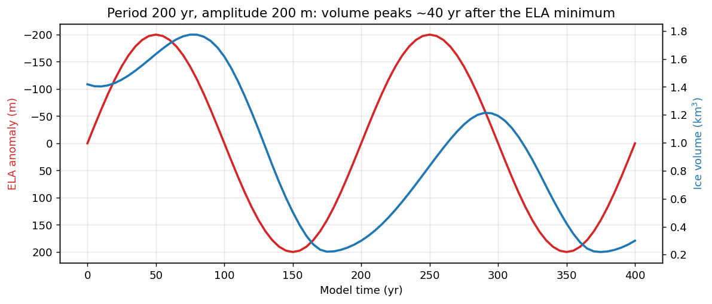
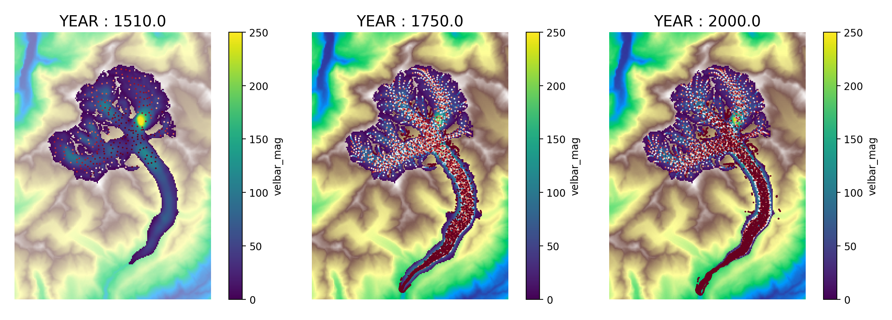

Session 3 — Lecture 3: Additional experiments and reporting#
Guillaume Jouvet
Course format: 3 afternoons × 4 hours + 1 extra#
Hour 1 |
Hour 2 |
Hour 3 |
Hour 4 |
|
|---|---|---|---|---|
Week 1 |
Glacier processes |
Glacier modelling |
Tutorial |
Glacier selection |
Week 2 |
Intro to IGM, past & future runs |
Project |
Project |
Project |
Week 3 |
Extra experiments, report |
Project |
Project |
Project |
(Week 4 |
dates and rate add-on |
G. King’s course |
Project |
Project) |
Part 1 — Goals of your mini-project#
Main question: how did your glacier evolve since the Little Ice Age, and how will it evolve until 2100?
Present: is the model state realistic today? (thickness, speed vs. observations)
Past: can the model reproduce the LIA maximum (~1850) and the retreat to today? → calibration / validation with moraines, Siegfried map, GLAMOS length changes
Future: glacier evolution 2020–2100 under ≥ 2 climate scenarios (e.g. SSP1-2.6 ≈ +1.5°C, SSP2-4.5 ≈ +2.5°C, SSP5-8.5 ≈ +4.5°C)
➡️ A. Common base (everyone): one model of your glacier, calibrated on the past, used for the future
Finish the calibration: tips#
Problem |
Try |
|---|---|
Glacier grows without limit / disappears |
more / less melt: |
No LIA advance |
colder pre-1901 |
Speeds too high / too low |
higher / lower |
One parameter at a time, run log in the notebook; no perfect fit: discuss the mismatch
Tests with
ratio: 2, final runs withratio: 1
Part 2 — Additional experiments#
Choose at least one exploration:
Question |
||
|---|---|---|
B1 |
Does the SMB model matter? (ELA-based vs climate) |
Session 2 |
B2 |
Which |
Session 2 |
B3 |
Response time: how fast does your glacier react? |
today |
B4 |
Moraines: where does the debris go? |
today |
Commands and plots: ~/work/my-glacier/analysis.ipynb, section 4
B3 — Response time: write your own IGM module#
user/code/processes/smb_oscillating.py: the ELA oscillates, the glacier follows… with a delay
def update(cfg, state): # called at each time step
p = cfg.processes.smb_oscillating
t = float(state.t.numpy()) - cfg.processes.time.start
state.ela = state.ela_mean - p.amplitude * math.sin(2 * math.pi * t / p.period)
smb = state.usurf - state.ela # SMB linear in elevation
state.smb = ...
igm_run +experiment=params_response_time hydra.run.dir=outputs/response_200
B3 — Response time: example (Findelengletscher)#

The volume peaks ~40 years after the ELA minimum (period 200 yr, amplitude 200 m)
Other periods (50, 100, 400 yr,
processes.smb_oscillating.period=100): how do lag and amplitude change? Compare with \(\tau \approx H/(-b_{terminus})\) (Lecture 1a) and the tutorialRead the module: how to extend IGM with
initialize,update,finalize
B4 — Moraines: tracking debris with particles#

Particles carried by the ice flow (Rhone Glacier, 1510 → 2000) ➡️ moraines, debris cover
params_past_moraines.yaml = your calibrated past run + particles (seeded every 10 yr in the accumulation area)
B4 — Moraines: questions#
igm_run +experiment=params_past_moraines hydra.run.dir=outputs/past_moraines
Notebook: plot_particles(run, year=...), and rh_min=0.95 for the debris at the surface only
Where do the particles re-emerge at the surface? Do they form medial / lateral moraines?
Compare with the moraines on aerial photos (map.geo.admin.ch) and with the LIA moraines
Particles left on ice-free terrain: debris deposited where the glacier retreated
How old is the debris when it reaches the front?
C. Extensions (optional, discuss them with us first)#
Uncertainty: small ensembles (melt factor, initial thickness,
prec_scal, CH2018 ranges)Precipitation: ±20 % precipitation vs ±1 °C?
Committed loss: today’s climate kept, when does the glacier stabilize (beyond 2100)?
Tributaries and lakes: disconnections, proglacial lakes in bed overdeepenings (
topg)Validation: GLAMOS series, Siegfried / Dufour maps, swisstopo thickness
Your own question: hazards, water resources, landscape evolution…
A good experiment design#
One question → one (or a few) experiments → one figure
Change one thing at a time (ELA,
delta_temp,melt_enhancer,tau_ref, …)Keep one YAML file per experiment, with a meaningful name (
params_past_ref.yaml,params_ssp585.yaml, …)Write down for each run: what you changed, why, and the outcome (a simple table/log)
Explore uncertainty: run a small ensemble (e.g. 3 values of a parameter) rather than one “perfect” run
Part 3 — The report#
≤ 1500 words (excluding captions and references), PDF
Written like a short scientific paper:
Introduction: why model glaciers? state of knowledge, your research question(s)
Study site: location, characteristics, history, available observations
Methods: the model (what it does, not how you ran it: no code, no YAML), data, experiments
Results: figures!
Discussion: answer your questions, limitations, uncertainties
Conclusion + references
Methods: describe the model, not the code#
❌ “We ran igm_run +experiment=params_past with smb: method: oggm and melt_enhancer: 1.4.”
✅ “Ice flow is modelled with the Instructed Glacier Model (IGM; Jouvet & Cordonnier, 2023), which solves a higher-order approximation of the Stokes equations with a physics-informed neural network. The surface mass balance is computed with a monthly temperature-index model (Maussion et al., 2019), forced by the GSWP3-W5E5 climate; melt was scaled by a factor of 1.4 to reproduce the observed front position in 2020.”
A reader who does not know IGM must understand what you did, and be able to reproduce it.
Figures convey your results#
Typical figures: map of the glacier (thickness/speed) at key dates, time series of volume/area/length, flowline profiles, model vs. observations
Every figure: axes with units, legend, readable font, a caption that says what to see
Compare model with observations whenever possible (LIA extent, GLAMOS length changes, observed speeds)
Fewer, better figures (4–6 is a good number)
Inspiration: Jouvet et al. (2011) https://doi.org/10.3189/002214311798843359 — https://doi.org/10.3189/2013AoG63A434
Discussion: be critical#
Which results are robust? Which depend strongly on a poorly known parameter?
Main sources of uncertainty: initial ice thickness, SMB/climate forcing, sliding, starting from today’s geometry for the past, 100 m resolution, …
Does the model reproduce the observations? If not, why?
What would you do with more time/data?
Evaluation#
Criterion |
Weight |
|---|---|
A. Research question, context, literature |
25% |
B. Modelling tools and numerical experiments |
25% |
C. Results and discussion |
25% |
D. Form and quality (structure, figures, writing) |
10% |
Handed in on time |
Deadline: to be announced. Questions? Ask the assistant during the project hours.
Now: work on your project#
Checklist for today:
Past run that reaches a plausible LIA maximum and today’s extent
≥ 2 future scenarios
≥ 1 exploration (B1–B4)
Figures drafted
Report outline written
~/work/my-glacier/ (your copy: YAML + terminal + analysis.ipynb)
Back up at the end of each afternoon (cd ~/work && tar czf my-glacier.tar.gz --exclude=outputs --exclude=data my-glacier → Download → OneDrive): RenkuLab sessions are not permanent storage. Data problem? Delete data/input_<RGI_ID>.nc and run again.